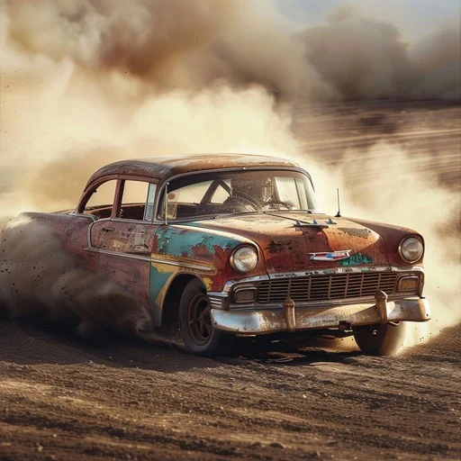

01 / IMAGINATION IN MOTION
Turn Words Into Extraordinary Images
A weathered classic. A cloud of dust. A moment full of motion. Start with the subject, then describe the light, setting, and energy that give your image a story.
Explore AI Models Try Now Describe a cinematic scene